Módulo 2
Capítulo 13
Aula 01 - Pisicologia das cores.
Dica: Evite usar fundo preto com letras brancas se o site tiver muito conteúdo escreto, essa combinação causa cansaço visual.
O ideal é que a paleta de cores do site possua entre 3 a 5 cores
Situações para usar ou evitar as cores
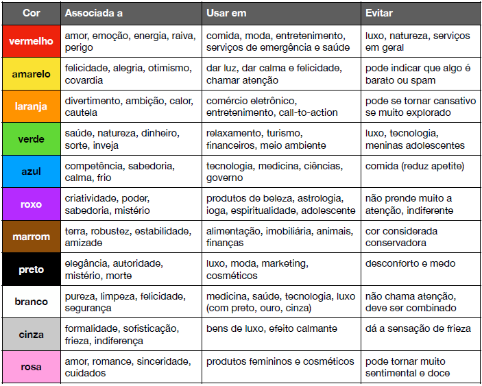Aula 03 – Harmonia de cores.
Circulo Cromático
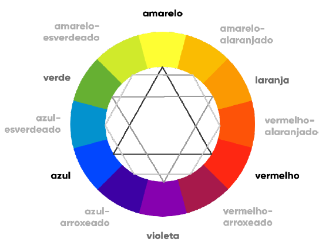Temperatura
Olhando o círculo cromático, também conseguimos classificar as cores por sua temperatura.
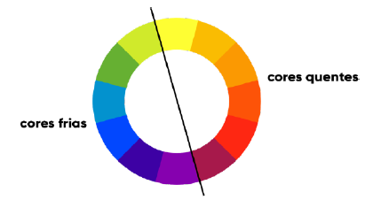Cores complementares
São aquelas que apresentam o maior contraste entre si. Elas estão localizadas do lado imediatamente oposto do círculo cromático.
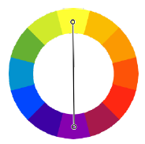Cores análogas
Diferente das cores complementares, que estão do lado extremo oposto no círculo cromático, as cores análogas são aquelas que são imediatamente vizinhas entre si.
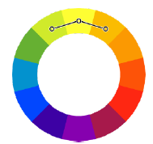Cores análogas mais uma complementar
Essa técnica quebra um pouco o ritmo semelhante das cores análogas, adicionando uma cor que cria um grande contraste com as três análogas.
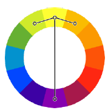Cores análogas relacionadas
Nesse tipo de harmonia, escolhemos duas cores análogas (consecutivas) e depois pulamos uma terceira cor (em qualquer direção) e escolhemos a quarta. Com essa técnica, conseguimos um resultado parecido com o das cores análogas simples, mas com um pouco mais de contraste sem ter que escolher uma cor complementar.
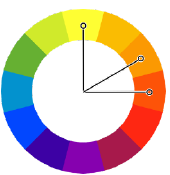Cores intercaladas
Um tipo menos usado de harmonia, já que às vezes não funciona tão bem assim. Vamos escolher a primeira cor e depois mais duas com intervalo constante entre elas.
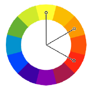Cores triádicas
Técnica bastante utilizada e que garante uma grande riqueza de cores, onde escolhemos três pontos equidistantes no círculo cromático.
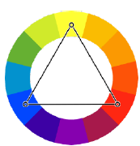Cores em quadrado
Bastante semelhante ao esquema triádico, mas permite selecionar quatro cores com um contraste razoável entre as cores escolhidas.
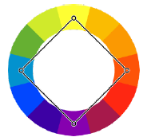Cores tetrádicas
Com essa técnica, vamos escolher dois pares de cores complementares, que não serão necessariamente análogas ou consecutivas. Isso vai nos garantir dois pares de cores, com bastante contraste entre si.
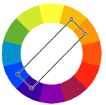Monocromia
Uma harmonia bem diferente das anteriores, que usa apenas uma cor e varia apenas a sua saturação e o seu brilho. Essa combinação geralmente gera pouquíssimo contraste entre as cores escolhidas, mas acaba gerando um resultado visual bem agradável aos olhos, conhecido como “degradê”.
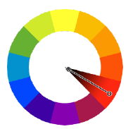Sites interessantes para criar paletas
Com base nesses conceitos, existem alguns sites gratuitos muito bons para criarmos paletas para nossos sites:
- Adobe Color - Esse site te da as paletas e também o código decimal. Também possui uma aba de "extrair tema" que você pode importar qualquer imagem e ele te da a paleta de cores
- Paletton - A proposta é parecida com a do adobe color, mas aqui, na aba "exaples" podemos simular uma pagina de um site com as cores de determinadas paletas
- Colorzilla - Trata-se de uma extensão para google chrome, com ela podemos "capturar" qualquer cor de uma pagina ou imagem em nosso navegador.
Capítulo 14
Aula 02 - Anatomia dos Tipos.
Curiosidade: a letra x é o ponto de partida para a contrução de todas as fontes, isso porque ela é usada como base para definir a altura de todas as letras minusculas.
Fontes Serifadas.
As serifas são pequenos prolongamentos ou pequenas "sobras" nas letras que tem a capacidade de guiar nossos olhos pelo texto e faciliar a leitura:
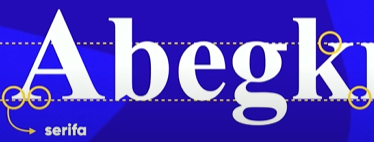Curiosidade
Nós nunca lemos as palavras letra por letra, mas sim pelo conjunto. Por exemplo, veja o texto abaixo:

Certamente foi possivel entender o texto numa velociade normal de leitura, mesmo notando que as letras estavam foram de lugar, isso ocorre porque nosso cérebro completa a palavra de acordo com o "banco de dados" armazenado nele. A serifa facilita esse processo, pois ela guia nossa leitura pela linha do texto.
Aula 06 – Usando Google Fonts
O Google Fonts é um site muito bom para trabalharmos com fontes externas. Ele disponibiliza diversas fontes de graça que podemos usar no nosso site sem precisar baixar.
Basta escolher uma fonte, ou procurar por uma específica na barra de busca "Serch fonts", clicar em select ao lado da fonte, vai abrir um menu do lado direito, selecionando a opção "@import" o site vai nos dar o codigo de importação para usarmos no CSS, aí basta colar dentro do arquivo CSS ou tag <style>. Depois basta chamar a fonte no CSS normalmente, como já fizemos anteriormente.
Lembrando que qualquer @import que é feito em CSS deve ficar no inicio dos código, nas primeiras linhas.
Exemplo:
@import url('https://fonts.googleapis.com/css2?family=Indie+Flower&display=swap');
@import url('https://fonts.googleapis.com/css2?family=Fredericka+the+Great&family=Indie+Flower&display=swap');
body {
font-family: 'Indie Flower', Arial, Verdana, cursive;
font-size: 20px;
color: black;
}
h1 {
font-family: 'Fredericka the Great', cursive;
font-style: normal;
font-weight: lighter;
}
Aula 08 – Capturando as fontes usadas em um site.
Fonts Ninja - Com essa ferramenta conseguimos informações das fontes usadas em qualquer pagina da web.
Aula 09 - Detectando fontes dentro de imagens.
- WhatFontIs - esse site consegue identificar as fontes de uma imagem, basta carregar e seguir os passosindicados no site. Funciona para a maioria das imagens e fontes, mas também possui algumas limitações
- Font Squirre - Esse site também funciona de uma forma parecida com o anterior, mas suas limitações são maiores, mesmo assim é uma boa ferramenta.
Aula 10 – Alinhamento de textos com CSS.
Para alinhar o texto e os títulos de nossas paginas podemos usar o comando de CSS text-align com ele podemos alinhar os textos a esquerda (left), direita (right), no centro (center) ou justificado (justify).
Também podemos usar o text-ident para colocar uma identação em nossos parágrafos, facilitando a visualização.
Exemplo:
body {
font: normal 16px Arial, Verdana, serif;
text-align: left;
}
h1 {
text-align: center;
}
h2 {
text-align: right;
}
p {
text-align: justify;
text-indent: 30px;
}
Capítulo 15.
Aula 03 – Pseudo-classes em CSS.
Uma pseudo-classe CSS é uma palavra-chave adicionada a seletores que especifica um estado especial do elemento selecionado. Por exemplo, :hover pode ser usado para alterar a cor de um botão quando o usuário passar o cursor sobre ele.
No exemplo abaixo criamos uma <div> que é uma "divisão" em nossa pagina, quando passarmos o mouse em cima dela sua cor será alterada.
Para criar essa "animação" colocamos uma div e usamos o seguinte código em CSS:
div {
background-color: aqua;
text-align: center;
height: 150px;
width: 150px;
}
div:hover {
background-color: blue;
color: white;
}
Há coisas muito interessantes que podemos fazer com esse mesmo raciocinio, como por exemplo, criar um paragrafo escondido.
TEXTO ESCONDIDO...🙈
Para criar essa animação de cima usamos um código um pouco diferente:
div > p {
display: none;
}
div:hover > p {
display: block;
color: red;
}
"div > p" significa que p é child de de div, ou seja, lendo o código, é como dizer "quando passar o mouse em cima da div, altere o p que está dentro da div.
Isso será muito útil mais para frente, quando criarmos "menus ocultos".
Observações:
- display: none - Significa que aquele trecho não aparecerá na tela.
- display: block - Significa que aquele trecho aparecerá na tela.
Aula 04 – Pseudo-elementos em CSS.
Um pseudo-elemento CSS é uma palavra-chave adicionada a um seletor que permite que você estilize uma parte específica do elemento selecionado. Eles definem estados de elementos dentro da HTML.
Abaixo criamos um link, os atributos deste link foram modificados apartir de um psseudo elemento. Os pseudo-elementos são representados com :: (dois pontos, dois pontos), e nesse exemplo ele adiciona uma seta antes e depois do nosso link.
a {
color: red;
text-decoration: none;
font-weight: bold;
}
a:visited {
color: darkred;
}
a:hover {
color: black;
text-decoration: underline;
}
a:active {
color: yellow;
}
a::before {
content: '⇒ ';
text-decoration: none;
font-weight: normal;
}
a::after {
content: ' ⇐';
text-decoration: none;
font-weight: normal;
}
Entendendo o código.
Primeiro temos duas novas pseudo classes (representadas por :)
- a:visited = Se o site já foi visitado, ativa o bloco.
- a:active = quando ativado (click) executa o bloco.
Mais abaixo, em destaque, temos o assundo da aula, os pseudo-elementos (representados por ::).
- a::before = antes do elemento executa o bloco (no nosso exemplo ele cololou uma seta ⇒ antes do link usando o content).
- a::after = do elemento executa o bloco (no nosso exemplo ele cololou uma seta ⇐ depois do link usando o content).
Resumo do capítulo
Neste capitulo 15 podemos resumir que aprendemos sobre os seletores personalizados.
São eles:
- # = id;
- . = class;
- : = pseudo-class;
- :: = pseudo-element;
- > = children;
Capítulo 16.
Aula 01 – Modelo de Caixas: primeiros passos.
Baseado em um conceito chamado “box model”, a grande maioria dos elementos HTML que temos no nosso site são como caixas. Elas são containers que armazenam conteúdos ou até mesmo outras caixas.
Anatomia de uma caixa.
Vamos analisar como uma caixa vai ser apresentada por todos os navegadores. Olhe atentamente o diagrama a seguir, que é exatamente o já citado modelo de caixa:
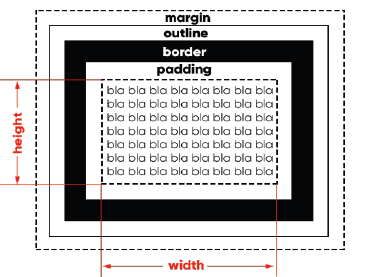Tudo começa a partir do conteúdo (content), que representamos acima com o bla bla bla… Por padrão, toda caixa é composta apenas pelo conteúdo e não possui padding, nem border, nem outline e nem margin. Uma exceção curiosa é o elemento <body> que já vem com uma margin de 8px.
Todo conteúdo possui uma largura (width) e uma altura (height) e a esse conjunto de propriedades, damos o nome de box-size (tamanho da caixa). O tamanho da caixa não inclui as medidas de padding, border, outline e margin.
Depois do conteúdo e de seu tamanho, vamos nos focar na borda que fica em volta dele. Ela pode ter uma espessura, uma cor e um formato.
Entre a borda e o conteúdo - da borda para dentro - temos o preenchimento (padding) e da borda para fora, temos a margem (margin).
Entre a margem e a borda, podemos determinar o contorno (outline) que é muito pouco utilizado, mas existe. Ele é um traçado visual que podemos criar fora da borda e o cálculo da sua espessura faz parte da margem estabelecida.
Vamos criar um exemplo simples para exemplificar todos esses componentes.
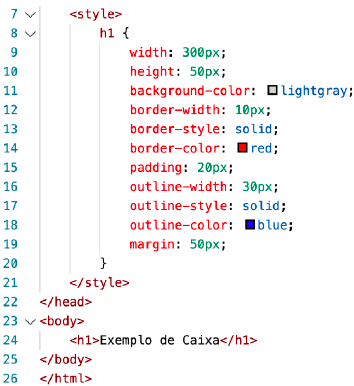Todas as configurações serão aplicadas ao elemento <h1>, que é uma caixa e foi criado na linha 24 do código acima. As linhas 9 e 10 configuram o size da caixa (largura e altura, respectivamente) e fará com que ela tenha 300x50 pixels.
As linhas de 12 a 14, configuram uma borda sólida, vermelha e com 10 pixels de espessura.
A linha 15 vai criar um espaço interno de preenchimento (da borda para dentro) de 20 pixels no elemento e a linha 19 vai criar um espaço externo (da borda para fora) de 50 pixels.
As linhas de 16 a 18 vão usar parte da margem para criar um contorno azul, sólido e com 30 pixels de espessura.
Dá pra simplificar?
As configurações de borda e contorno também possuem shorthands para simplificar o código anterior. A ordem para as duas configurações é sempre a mesma para as duas shorthands: largura (-width), estilo (-style) e cor (-color).
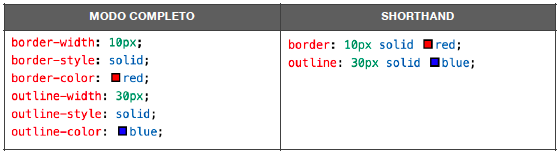Preenchimento e margem personalizados
Todo elemento de caixa possui quatro valores para padding e quatro para margin, sempre nessa mesma ordem: superior (-top), direita (-right), inferior (-bottom), esquerda (-left). Quando colocamos um único valor de dimensão para o preenchimento ou margem, esse mesmo valor é aplicado simetricamente a todas as direções, mas também podemos fazer códigos como:
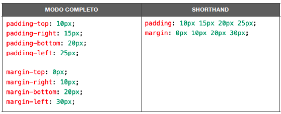Também existe a opção de indicar cada shorthand das propriedades de preenchimento e borda usando apenas duas medidas. Essa simplificação só é possível quando as medidas -top e -bottom forem iguais entre si e o mesmo também ocorrer entre as medidas -right e -left:
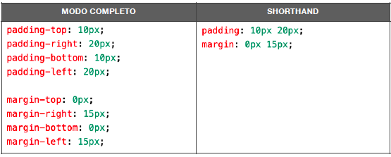Margens no automático.
Para centralizar uma caixa de forma automática, use a seguinte declaração no seu seletor:
margin: auto;
Tipos de Caixa.
Dependendo do comportamento da caixa, podemos classificar um elemento em uma de duas categorias:
- Caixa do tipo block-level - sempre vai se iniciar em uma nova linha e vai ocupar a
largura total do elemento onde ele está contido. Se não estiver contido em nenhuma
outra caixa, ele vai ocupar 100% da largura do <body>. O elemento block-level mais conhecido é o <div> e suas variações semânticas
modernas da HTML5, como <main>, <section>, <aside>, etc.
Exemplos: - Caixa do tipo inline-level - não vai começar em uma nova linha, e sim no ponto exato onde foram definidos. E a largura dele vai ocupar apenas o tamanho relativo ao seu conteúdo.
Exemplo:<a>, <abbr> <b>, <bdo>, <br>, <button>, <cite>, <code>, <dfn>, <em>, <i>, <img>, <input>, <kbd>, <label>, <map>, <object>, <output>, <q>, <samp>, <script>, <select>, <small>, <span>, <strong>, <sub> <textarea>, <tt>, <var>
<address>, <article>, <aside>, <blockquote>, <canvas>, <dd>, <div>, <dl> <dt>, <fieldset>, <figcaption>, <figure>, <footer>, <form>, <h1>, <h6> <header>, <hr>, <li>, <main>, <nav>, <noscript>, <ol>, <p>, <pre>, <section>, <table>, <tfoot>, <ul>, <video>
Grouping Tags e Semantic Tags
A linguagem HTML padrão tinha apenas duas tags de agrupamento genérico: a <div> e a <span>. A diferença básica entre elas é que a primeira é um elemento agrupador do tipo block-level e o segundo é inline-level.
Com o surgimento da HTML5, surgiram as tags semânticas de agrupamento. Isso não significa que as <div> e <span> (agora chamadas de não-semânticas) deixaram de existir ou ficaram obsoletas, mas seu uso agora faz menos sentido, pois temos tags para dividir as partes do nosso documento HTML.
Vamos compreender a partir de agora os principais agregadores semânticos da HTML5:
- Header - Pode ser o cabeçalho principal de um site ou até mesmo o cabeçalho de uma seção ou artigo. Podem também conter menus de navegação.
- Nav - Define uma área que possui os links de navegação pela estrutura de páginas que vão compor o website.
- Main - É um agrupador usado para delimitar o conteúdo principal do nosso site.
- Section - Cria seções para sua página. Ela pode conter o conteúdo diretamente no seu corpo ou dividir os conteúdos em artigos com conteúdos específicos.
- Article - Um artigo é um elemento que vai conter um conteúdo que pode ser lido de forma independente e dizem respeito a um mesmo assunto.
- Aside - Delimita um conteúdo periférico e complementar ao conteúdo principal de um artigo ou seção.
- Footer - Cria um rodapé para o site inteiro, seção ou artigo. É um conteúdo que não faz parte diretamente do conteúdo nem é um conteúdo periférico (o que caracterizaria um <aside>), mas possui informações sobre autoria do conteúdo, links adicionais, mapa do site, documentos relacionados.
Abaixo temos um exemplo simples de estrutura usando essas tags. Lembrando que o uso delas ou a sequencia não é uma regra:
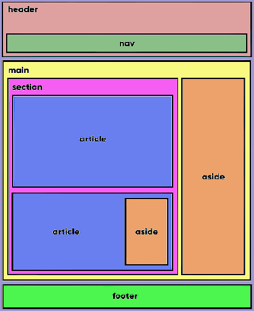Sombras nas caixas
As sombras são muito úteis para dar volume as nossas caixas, elas deixam o site mais bonito se usadas com moderação.
para criar uma sombra vamos usar a declaração box-shadow no CSS.
Usando sombras
Veja esse exemplo simples usando box-shadow: 4px 4px 3px black;
A ordem é sempre essa:
- Deslocamento horizontal (h-offset): quanto a sombra vai andar para o lado direito (valores negativos causam deslocamento para a esquerda).
- Deslocamento vertical (v-offset): quanto a sombra vai andar para baixo (valores negativos causam deslocamento para cima).
- Embaçamento (blur): quanto a sombra vai se espalhar pelo fundo.
- Cor (color): cor da sombra. É possível usar transparência.
Vértices arredondados
Podemos arredondar os vértices usando uma declaração simples usando a propriedade border-radius.
Usando bordas arredondadas
Veja esse exemplo simples usando border-radius: 10px;
Na declaração acima, todos os vértices foram levemente arredondados (10px) de forma simétrica. Se for necessário, podemos indicar quatro medidas diferentes, uma para cada vértice. Olhe atentamente para o resultado abaixo e perceba que cada ponta está diferente.
Usando bordas arredondadas
Veja esse exemplo simples usando border-radius: 10px 20px 30px 40px;
Assim como fizemos com as margens, também é possível indicar apenas dois valores, o que vai agir em vértices intercalados, partindo do canto superior esquerdo:
Usando bordas arredondadas
Veja esse exemplo simples usando border-radius: 10px 30px;